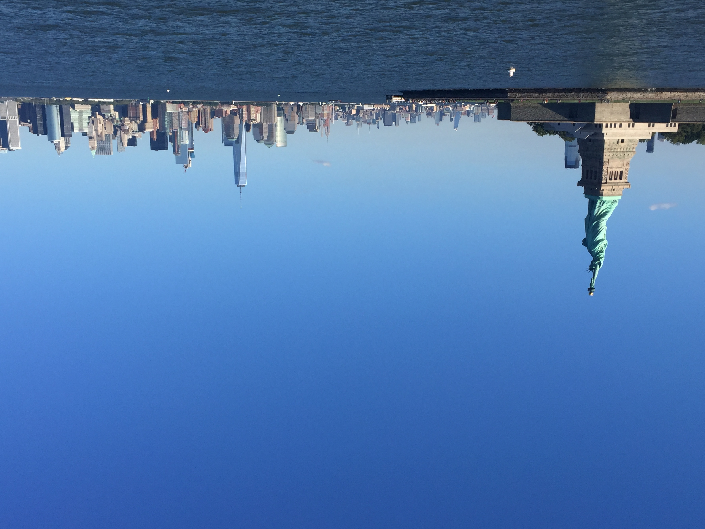

USA
A dream destination where beauty meets history
What makes me want to visit
I've always wondered what life in the USA is like. I always watched movies from the West and YouTube videos that are from there, imagining what it would be like to walk those streets, visit those iconic landmarks, and experience the culture firsthand. From the bustling energy of cities like New York and Los Angeles to the quiet charm of small American towns, there’s something about the USA that has always fascinated me. I’ve always wanted to try classic American food real New York pizza, deep dish from Chicago, or a proper Southern barbecue. More than just the places, though, I want to experience the way of life—the feeling of standing in Times Square at night, driving down an open highway with no destination in mind, or watching a sunset over the Grand Canyon. The USA feels like a place where dreams are made, where every city has its own story, and I can’t wait to one day explore it for myself.
Sceneries in the USA
Travel Information
How to Get There
- Flying: Direct flights from Manila (MNL) to major US cities like Los Angeles (LAX) and San Francisco (SFO) are available. Travel time is approximately 12-15 hours.
- Connecting Flights: You can also take connecting flights via other countries like Japan, South Korea, or Hong Kong.
Best Time to Visit
- Spring (March to May): Pleasant weather and blooming flowers.
- Fall (September to November): Mild temperatures and stunning foliage.
- Winter (December to February): Perfect for skiing and holiday festivities.